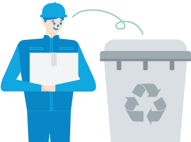
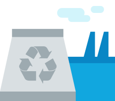
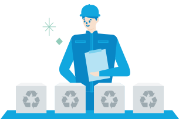

간편하게 환경보호에
동참해보세요!
자가관리 제품 사용 후 필터 회수 서비스 신청방법
사용 후 필터 회수 신청 기한: 필터 수령일로부터 30일
필터는 지정한 날짜에 주소지(설치장소) 문 앞에 배출
자세한 필터 포장 방법은 자가관리 키트 내 원시트 확인
회수한 필터는 이렇게 재활용 돼요!
필터 재활용 프로세스
-

수거된 필터를
재활용 업체로 보냅니다. -

재활용 업체에서
필터를 분해하여
재질 별로 분류합니다. -

재활용 가능한 플라스틱 재질은
공구가방, 자동차 범퍼 등에
사용됩니다.
사용 후 필터 회수 서비스 FAQ
-
사용 후 필터를 직접 분리 배출하면 안되나요?
정수기 필터는 플라스틱 재활용 가능 품목으로 직접 분리 배출 하셔도 됩니다.
-
필터 회수 택배 비용은 본인 부담인가요?
필터 회수 택배 비용은 코웨이가 부담합니다. 별도의 택배 신청이나 비용 없이 환경보호 활동에 동참하실 수 있습니다.
-
필터 회수를 할 때 택배 기사를 대면하는 것이 부담스러워요.
필터 회수는 비대면(문 앞에 내 놓으면 택배기사가 수거)으로 진행되므로 걱정하지 않아도 됩니다.
-
택배기사와 일정 조율하는 것이 번거로울 것 같아요.
필터 회수를 신청할 때 원하는 날짜를 직접 지정할 수 있고, 지정된 날짜에 주소지 문 앞에 내놓으시면 됩니다.
번거롭거나 걱정되신다면 플라스틱 재활용으로 직접 분리 배출도 가능하십니다. -
저희 집 제품은 방문 관리 서비스를 받는데, 필터 회수 프로그램 대상인가요?
방문 관리 서비스를 받으시는 고객님의 사용 후 필터는 코디가 안전하게 수거하여 재활용 업체로 보내 재활용하고 있으므로
필터 회수 프로그램 대상이 아닙니다. -
제품을 사용하는 설치장소가 변경되었는데 어떻게 해야하나요?
고객님께서 직접 코웨이 홈페이지와 고객센터를 통해 변경할 수 있습니다.
(코웨이 홈페이지 → 사용중인 제품 → 설치처 변경 또는 1588-5200)